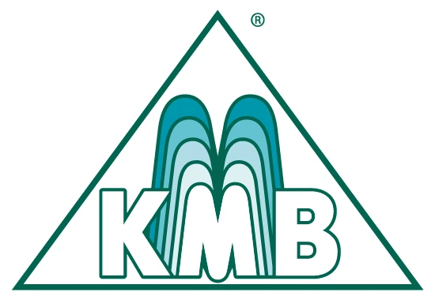
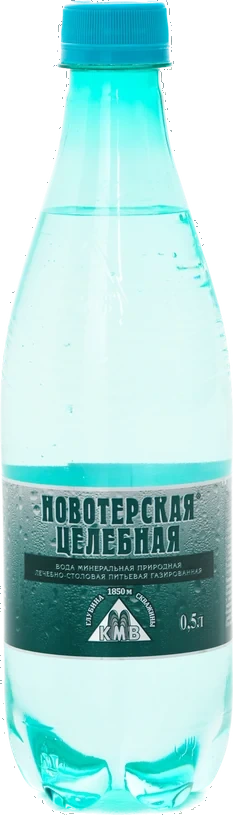
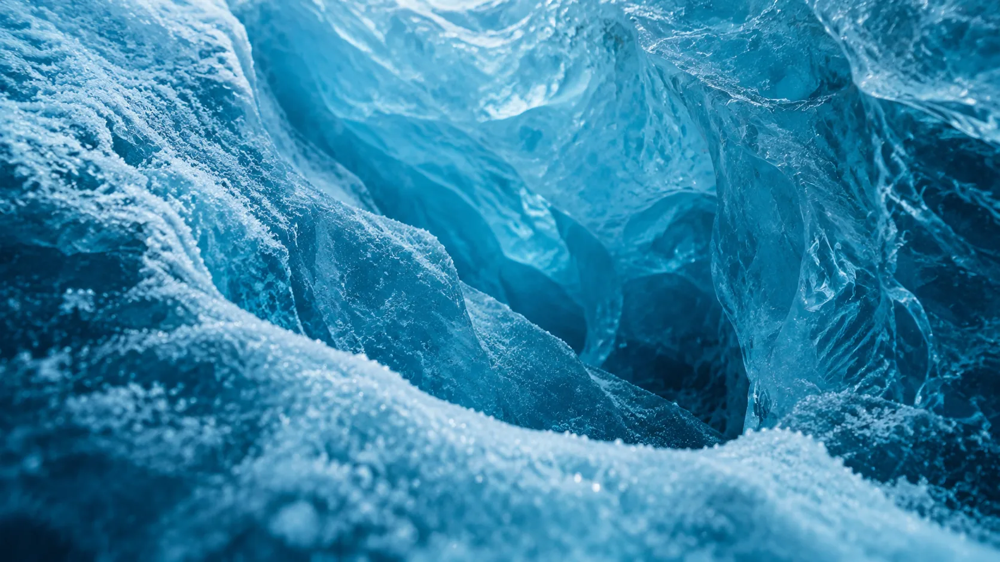
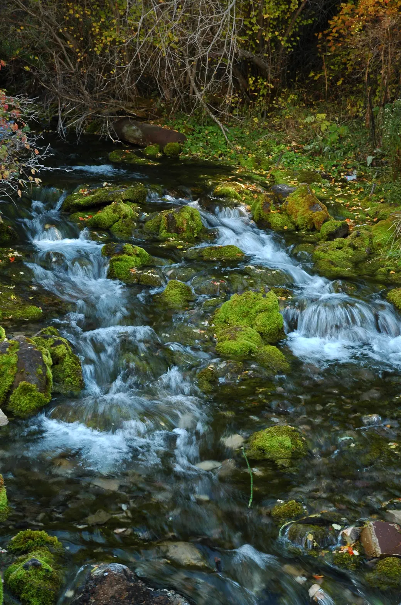
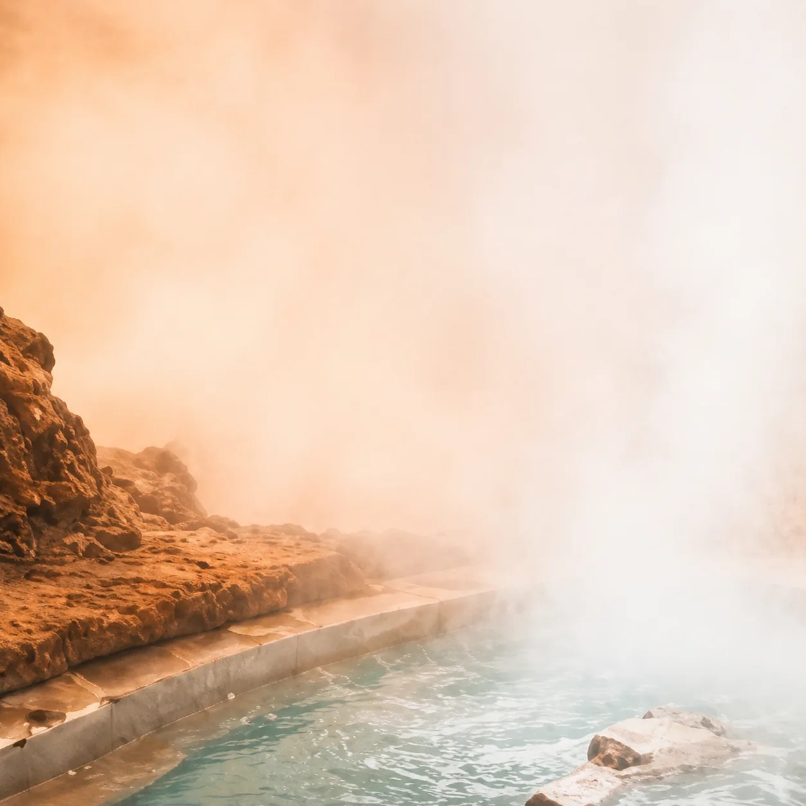
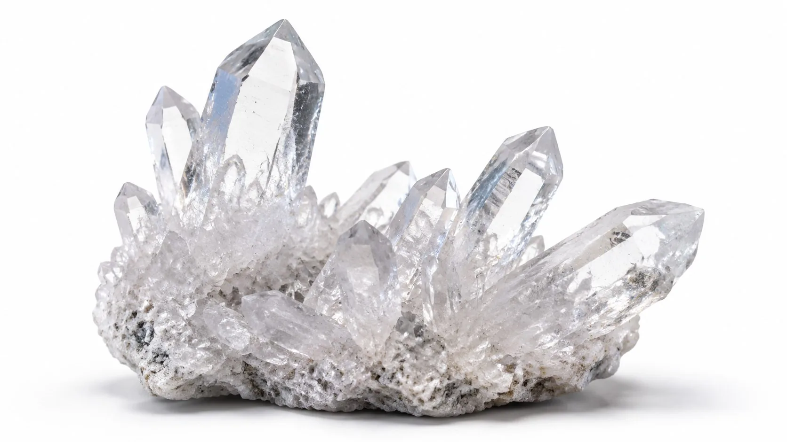
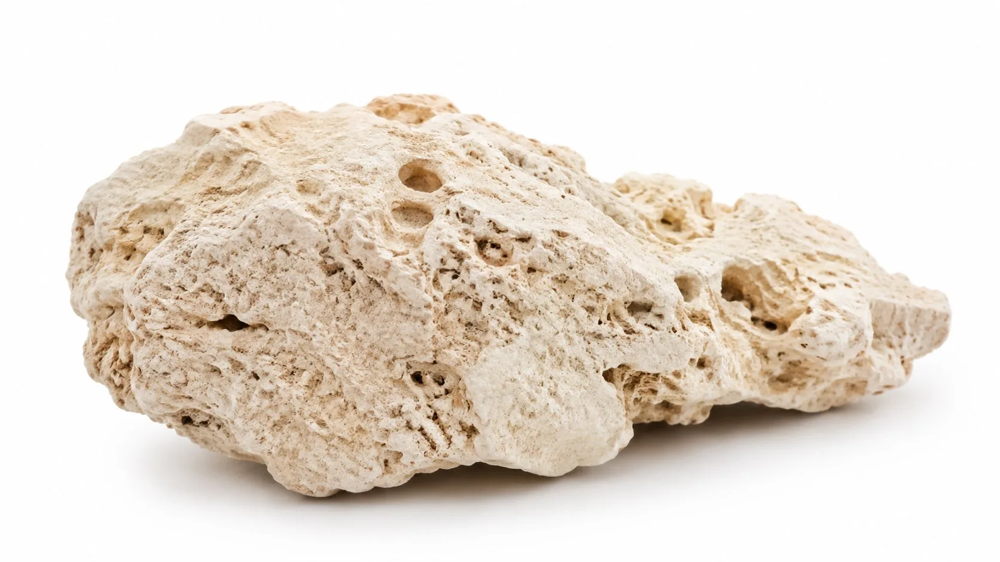
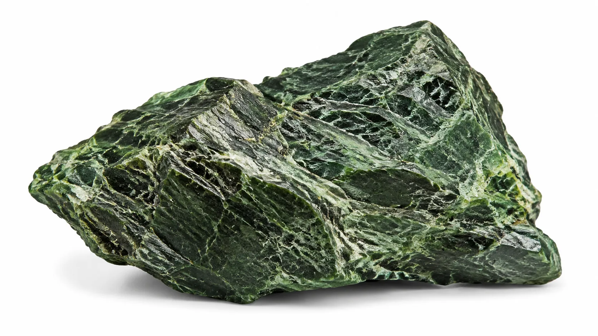
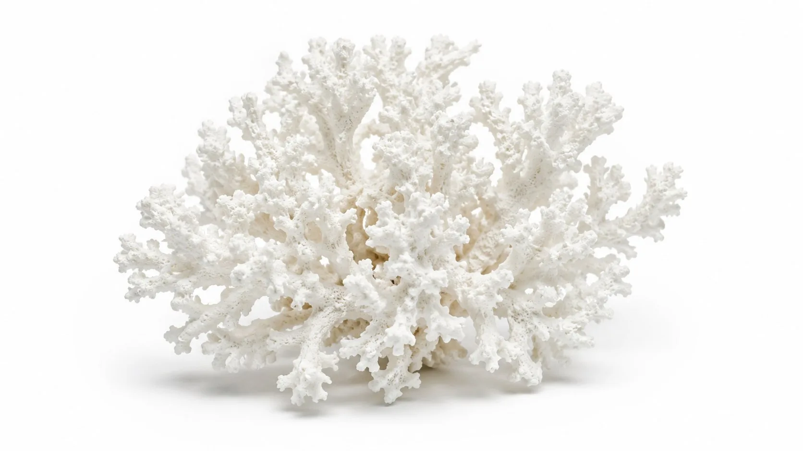

Воздух
Чистота высоты. Путь начинается у вершин Эльбруса.

Новотерская природная минеральная водаПуть каждой капли начинается на вершинах Эльбруса и продолжается в глубинах земли, где холод, тепло и горные породы создают природный баланс.

Легенда
Воздух, Лёд, Земля и Огонь — единая природная панорама, а не четыре отдельных истории.
Чистота высоты. Путь начинается у вершин Эльбруса.
Талая вода медленно проходит сквозь лёд и горные слои.

Горные породы насыщают воду природными минералами.

Подземное тепло и термальные источники завершают природный процесс.

Процесс
Следуйте за каплей: вершина, ледник, горная порода, подземное тепло, природный источник.
Облака сгущаются над Эльбрусом; появляется первая талая вода.
Поток уходит в трещину и опускается сквозь породу.
Глубокие слои придают воде природный минеральный характер.
Подземное тепло и термальный пар встречают поток.
Вода выходит на поверхность среди зелёного леса, мха и чистого ручья.
Что внутри

Природный компонент воды. Поддерживает ткани и костную систему.*

Основа прочности костей и зубов.*

Поддержка нервной системы и сердечного ритма.*

Помогают сохранять кислотно-щелочной баланс.*
* Финальные формулировки о физиологическом воздействии публикуются только после проверки технологом, юристом и специалистом по маркировке. До согласования — нейтральные формулировки о составе.
Источник
Вода проходит долгий природный путь сквозь горные породы — прежде чем мы бережно её разливаем, сохраняя баланс таким, каким его создала природа.
Читать историю происхожденияДоказательства
Рациональная опора легенды: подготовка, материалы, контроль и стандарты.
Фильтрация без химических реагентов: песчано-гравийные и угольные фильтры, микронная очистка и УФ-обработка.
Линии из Италии, Франции и Германии; вода идёт по собственному минералопроводу.
Собственная лаборатория, контроль каждой партии и показатели безопасности по ГОСТ Р 54316 и ТР ТС 021/2011.
FSSC 22000, государственная регистрация ЕАЭС и Российский знак качества — документы ниже.
Открыть документыДва автономных цеха, точный розлив и состав, сохранённый от источника до бутылки.
Данные приведены по документации производителя; точные значения по партии указаны на этикетке.
Линейка
Мы не создаем воду. Мы лишь бережно сохраняем путь, который природа проходила десятилетиями.
Чистота природы. Безупречность производства.
Попробовать баланс природыГде купить
Оптовые поставки и доставка по России через официальных дистрибьюторов.
Контакты
АО «Кавминводы»
357242, Ставропольский край, Минераловодский р-н, пос. Новотерский, ул. Бештаугорская, 1